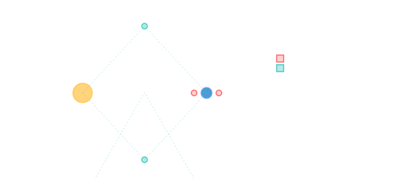

Lagrange points
Five gravitationally-balanced spots in every two-body system where a small spacecraft can hover with almost no fuel — and where most modern deep-space observatories actually live.

101 · zoom in
Take any two bodies orbiting each other — Sun and Earth, Earth and Moon, Sun and Jupiter — and there are exactly five spots in the orbit plane where a third, much smaller body can stay put relative to the two big ones. Joseph-Louis Lagrange worked them out in 1772. Two and a half centuries later they are the most valuable real estate in cislunar space.
JWST sits at Sun-Earth L2. SOHO sits at Sun-Earth L1. Gateway will live near Earth-Moon L2. Queqiao relays Chang'e signals from beyond the Moon at Earth-Moon L2 too. The named-spacecraft list is short and almost entirely Lagrange-stationed.
The five points sit in specific geometries. **L1** lies between the two bodies on the line connecting them — for Sun-Earth, that's ~1.5 million km sunward of Earth, where the Sun's pull and Earth's pull balance the centripetal requirement. **L2** is on the same line but on the FAR side of the smaller body — for Sun-Earth, ~1.5 million km anti-sunward of Earth. **L3** is on the opposite side of the larger body, hidden behind the Sun from Earth's perspective. **L4** and **L5** are at the vertices of equilateral triangles formed with the two bodies — 60° ahead and 60° behind the smaller body's orbit.
Stability differs sharply. L1, L2, and L3 are **saddle points** — gravitationally balanced on the in-out axis but unstable on perpendicular axes. A spacecraft parked there will drift off within months unless it does small station-keeping burns. L4 and L5 are **stable** — they're potential-energy wells. Dust collects at the Earth-Sun L4/L5 (the Kordylewski clouds, faint but real); Trojan asteroids librate around the Sun-Jupiter L4 and L5 in their millions.
**Sun-Earth Lagrange points** are where big observatories live: SEL1 hosts SOHO (Sun-watching since 1996) and DSCOVR (Earth-watching); SEL2 hosts JWST, Spektr-RG, Euclid, Gaia, and previously Herschel + Planck — anti-sunward so the Sun + Earth + Moon are all on one side, easy to shadow-shield. SEL2 is ~6 months of free-coast away from Earth, with one ~5 m/s halo-orbit-insertion burn at arrival; no fuel for station-keeping more than ~2 m/s/yr.
**Earth-Moon Lagrange points** are the strategic real estate for the Artemis programme. EML2 (~60,000 km past the Moon) is the staging point for Gateway in NRHO (a near-rectilinear halo around it). It gives line-of-sight to both the lunar far side (where Chang'e-4 landed; Queqiao relays from EML2) and to Earth. EML1, between Earth and the Moon, is a natural waypoint for any cislunar architecture that wants to descend and ascend repeatedly without bleeding ∆v on transfers. The next decade of crewed Moon operations is largely a Lagrange-point story.